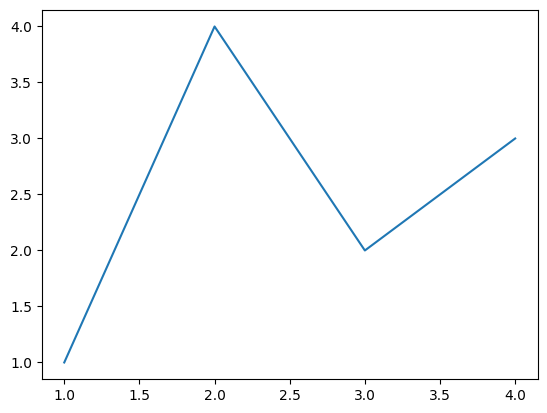
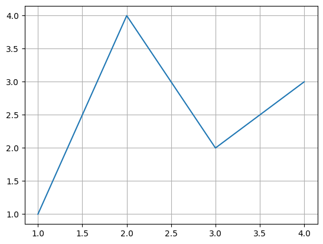
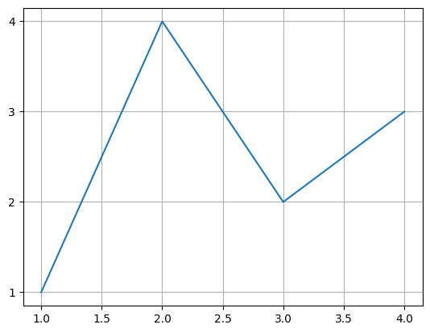
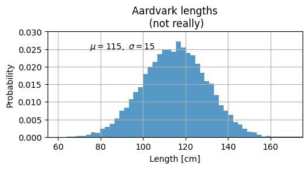
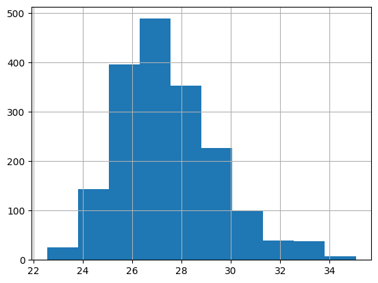
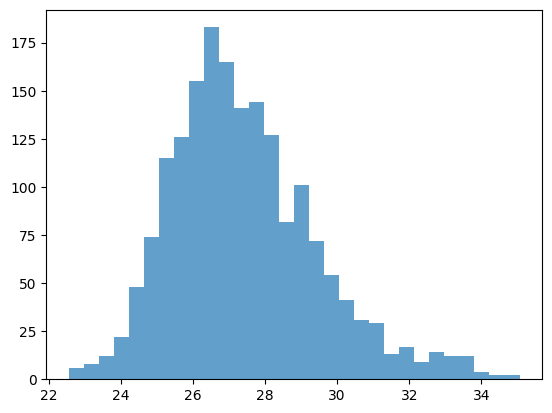
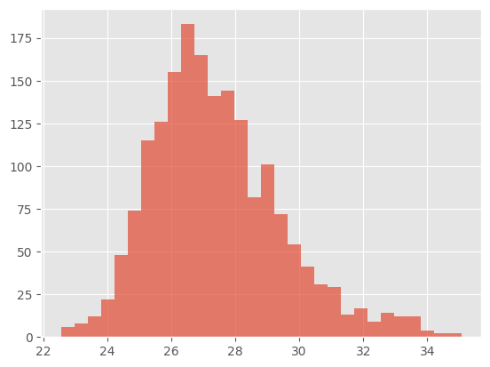

Matplotlib#
A comprehensive library for creating static, animated, and interactive visualizations in Python.
Built on NumPy arrays and designed to work with the broader SciPy stack.
import matplotlib as mpl
import matplotlib.pyplot as plt
import numpy as np
Basic Line Plot#
From Getting Started.
fig, ax = plt.subplots() # Create a figure containing a single Axes.
ax.plot([1, 2, 3, 4], [1, 4, 2, 3]) # Plot some data on the Axes.
plt.show() # Show the figure.


fig, ax = plt.subplots() # Create a figure containing a single Axes.
ax.plot([1, 2, 3, 4], [1, 4, 2, 3]) # Plot some data on the Axes.
ax.grid()
plt.show()

Customize ticks
ax.yaxis.set_major_locator(mpl.ticker.MaxNLocator(integer=True))
# ax.xaxis.set_major_locator(mpl.ticker.MaxNLocator(integer=True))
ax.get_figure()

mu, sigma = 115, 15
x = mu + sigma * np.random.randn(10000)
fig, ax = plt.subplots(figsize=(5, 2.7), layout="constrained")
# the histogram of the data
n, bins, patches = ax.hist(x, 50, density=True, facecolor="C0", alpha=0.75)
ax.set_xlabel("Length [cm]")
ax.set_ylabel("Probability")
ax.set_title("Aardvark lengths\n (not really)")
ax.text(75, 0.025, r"$\mu=115,\ \sigma=15$")
ax.axis([55, 175, 0, 0.03])
ax.grid(True)

# ## Proteomics data example
import pathlib
import pandas as pd
dir_data = pathlib.Path("data")
df = pd.read_csv(dir_data / "proteins" / "proteins.csv", index_col=0)
df
| A5A613 | P00350 | P00363 | P00370 | P00393 | P00448 | P00452 | P00490 | P00509 | P00547 | ... | Q47319 | Q47536 | Q47622 | Q47679 | Q47710 | Q57261 | Q59385-2 | Q59385 | Q7DFV3 | Q93K97 | |
|---|---|---|---|---|---|---|---|---|---|---|---|---|---|---|---|---|---|---|---|---|---|
| Reference | |||||||||||||||||||||
| DMSO_rep1 | 27.180209 | 28.151576 | 30.247131 | 27.459171 | 26.823758 | 25.610416 | NaN | 27.864232 | 29.978578 | 26.064548 | ... | NaN | NaN | 25.342902 | NaN | 27.037851 | 28.410859 | 23.554913 | 27.640279 | 28.512794 | 27.223010 |
| DMSO_rep2 | NaN | 27.926204 | 30.261665 | 26.873349 | 26.756617 | 24.901115 | NaN | 26.438754 | 29.047684 | NaN | ... | NaN | NaN | NaN | NaN | 26.840857 | 27.940694 | 25.240354 | 27.243650 | 27.620780 | 25.291110 |
| DMSO_rep3 | NaN | 27.653250 | 29.969625 | 26.599971 | 25.442346 | 25.053685 | 27.171761 | 26.381648 | 28.776632 | NaN | ... | NaN | NaN | 24.576067 | NaN | 26.608837 | 27.070328 | NaN | 27.525020 | 27.678892 | 24.358694 |
| DMSO_rep4 | NaN | 27.151643 | 29.470663 | 26.438623 | 25.798954 | 24.789968 | NaN | 26.819972 | 29.485008 | 25.524309 | ... | NaN | NaN | 25.945061 | 23.902241 | 27.163729 | 26.679649 | 22.524292 | 27.403753 | 27.255831 | 25.767196 |
| Suf_rep1 | NaN | 27.441837 | 30.004725 | 27.399691 | 26.671118 | 25.563594 | NaN | 27.685173 | 29.295104 | NaN | ... | NaN | NaN | 25.836449 | NaN | 26.819093 | 27.995432 | NaN | 27.498873 | 28.090220 | 25.956190 |
| Suf_rep2 | NaN | 27.031610 | 30.085997 | 27.189188 | 26.885970 | 25.377559 | 27.363746 | 27.531440 | 29.283884 | NaN | ... | NaN | NaN | NaN | 24.162220 | 27.268473 | 27.055135 | NaN | 27.666957 | 27.525537 | 25.230565 |
| Suf_rep3 | NaN | 27.814631 | 29.904057 | 27.139030 | 26.711192 | 25.318283 | 26.061913 | 27.545416 | 29.356666 | 26.264707 | ... | 25.46301 | NaN | NaN | NaN | 24.740745 | 27.313219 | NaN | 27.708407 | 27.814369 | 26.103059 |
| Suf_rep4 | NaN | 27.587217 | 29.575194 | 27.223715 | 26.320866 | 25.360257 | 25.100872 | 27.704556 | 29.583906 | 26.426897 | ... | NaN | 24.46752 | 24.757039 | 24.040325 | 27.071346 | 26.643479 | NaN | 27.847610 | 27.605449 | 26.177716 |
8 rows × 2269 columns
x = df.iloc[0]
x
A5A613 27.180209
P00350 28.151576
P00363 30.247131
P00370 27.459171
P00393 26.823758
...
Q57261 28.410859
Q59385-2 23.554913
Q59385 27.640279
Q7DFV3 28.512794
Q93K97 27.223010
Name: DMSO_rep1, Length: 2269, dtype: float64
ax = x.hist()

fig, ax = plt.subplots()
n, bins, patches = ax.hist(x, bins=30, alpha=0.7, color="C0")

Available styles#
Choose your preferred style with it’s defaults here
plt.style.use('ggplot')


with plt.style.context("ggplot"):
fig, ax = plt.subplots()
n, bins, patches = ax.hist(x, bins=30, alpha=0.7)
